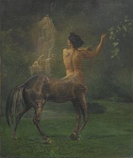

.jpg)
Mythology is a series of beliefs based on a certain religion or group. Greek Mythology started to spread in 2000 BC. There are hundreds of different stories and tales about all different types of gods and heroes.
Some of the most popular Mythology stories are "The Odyssey" and "Hercules".These popular mythology tales have been made into books and even movies.
Greek Mythology are also known for having stories about different creatures that some people believe in. One of the most popular is Centaur,who had the upper body of a human and the lower body of a horse. |
Centaur first started to be popular in 522 BC. His abilities were intelligence and speech. Centaur originated in Greece.

Another part of mythology is folklore,which is the traditional passing of beliefs and culture. Mermaids are one of the most popular folklores,which is half human and half fish. Mermaids have been used in shows and other entertainment like the movie "The Little Mermaid", and even Barbie toys. Some abilities of Mermaids were starting huge storms, provoking disaster, and foretelling th future .Mermaids originated from Greece also. Many people believe that mermaids are real and still exist to this day while others think they are fake and are just a tale.